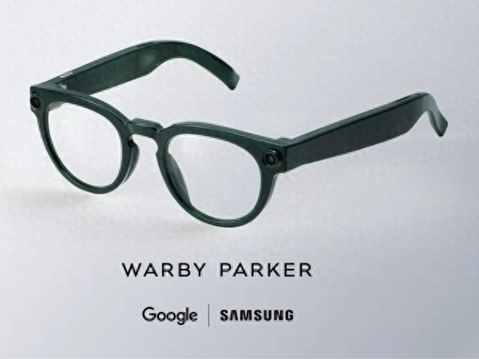
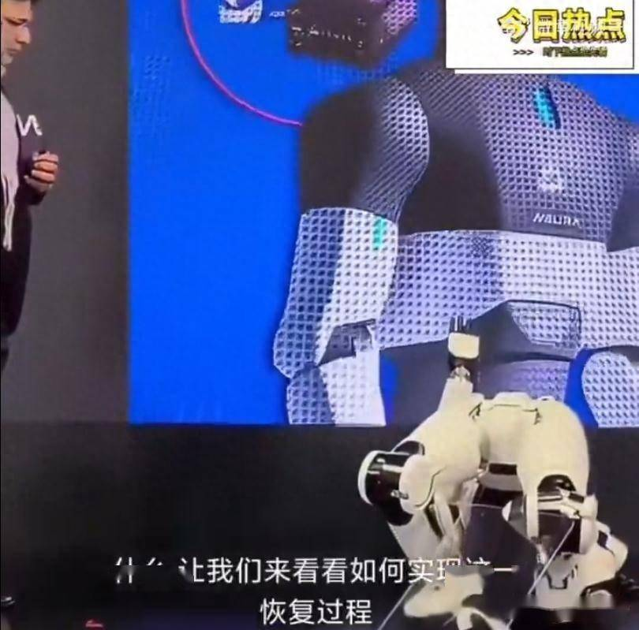
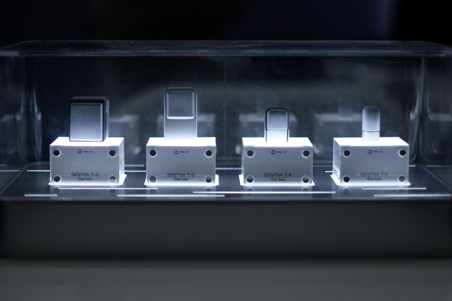

今日雷达
过去 48 小时 AI 圈最值得关注的动态 · 点标题可看原文

什么瓜：7月22日 Galaxy Unpacked 在伦敦举行，压轴的 One More Thing 是一副 AI 眼镜——三星和谷歌合作的 Galaxy Glass，和 Ray-Ban Meta 正面硬刚，秋季全球上市。
什么配置：基于 Android XR 平台、Gemini 驱动，带相机和麦克风、支持实时翻译，但没有显示屏——看上去就是一副正常眼镜的样子。
什么来头：时尚设计交给了 Gentle Monster 和 Warby Parker 两家眼镜潮牌，明显是冲着"让人愿意天天戴出门"去的。

什么瓜：Computex 2026 台北电脑展的高通发布会上，主持人正激情介绍 Dragonwing IQ10 人形机器人的"智能步态、自主交互"，身旁的机器人毫无外力触碰，直接失衡倒地。
什么细节：倒地后它短暂抬了抬手，试图挣扎，然后彻底躺平，再也没能自己站起来——全程高清直播，全网实时转播，成了科技圈最新名场面。
什么神操作：工作人员火速冲上台，没有检修、没有排查，而是掏出一块大黑布把机器人严严实实盖住，直接抬走。这套"盖被子式救场"被网友疯狂玩梗。
什么讨论：行业随之吵翻——这台机器主打 700TOPS 超高 AI 算力，结果连站稳都做不到。算力再高，站不起来也是轮椅，平衡控制才是人形机器人真正的坎。
](../images/radar/r0719_03.png)
什么瓜：蚂蚁在 WAIC 2026 发布了 Agentar 2.0——"商业智能体超级工厂"的核心平台，瞄准企业级 AI 员工市场。
什么配置：首批预置近 200 个岗位级数字专家模板，外加数百个可订阅的 Skill 级工具，企业不用从零开发，像搭积木一样就能拼出自己想要的数字员工。
什么信号：CEO 韩歆毅放话，AI 的终极价值不是提升个人效率，而是推动组织整体进化。说白了就是：以后公司里一部分活，是 AI 干的。

什么瓜：一目科技宣布完成超 10 亿元 E 轮融资，估值突破 100 亿元，由多家一线人民币基金、头部美元基金和产业方联合注资。
干什么：核心产品是机器人触觉传感器——把物理触摸转化成压力、剪切力、纹理等结构化数据，让机器人"有手感"。
什么绝活：最薄款已经做到小于 3 毫米，能直接塞进灵巧手的指尖里，解决了一直以来"传感器装不下"的行业瓶颈。
什么风向：CEO 李智强说，去年大家还不问触觉，今年 WAIC 上人人都在问——具身智能的下一个军备竞赛，可能在指尖上。
来源索引
本期全部引用来源，方便多方查证
- Samsung to unveil Android-based smart glasses with Google this week
- Galaxy Unpacked July 2026: What to expect from Samsung's foldables and more
- Samsung Set to Unveil First 4:3 Foldable Phone at Galaxy Unpacked 2026
- 高通发布会机器人现场摔倒
- 突发!高通机器人台北展失控摔倒，人形机器人稳定性再遭质疑
- 太丢脸了!高通人形机器人发布会当众摔倒，盖布遮丑翻车传遍全网
- 蚂蚁数科发布商业智能体超级工厂核心平台 Agentar 2.0
- 蚂蚁数科发布"商业智能体超级工厂"
- Ant Digital Technology Releases Core Platform Agentar 2.0
- 一目科技完成超10亿元E轮融资
- WAIC大咖说｜一目科技CEO李智强:视触觉路线是最类人的路线
- 独家|机器人的指尖上，新晋一家百亿公司
本报告由 AI 检索公开信息整理生成，内容仅供参考，请以原始来源为准
生成时间：2026年7月19日 · AI 圈实时雷达
💬 评论交流